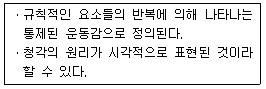
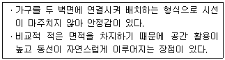
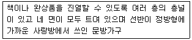
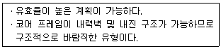
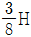
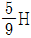
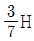
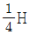
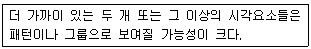

실내건축산업기사 (2017-08-26 기출문제)
1과목: 실내디자인론
1. 광원의 연색성에 관한 설명으로 옳지 않은 것은?
- 연색성을 수치로 나타낸 것을 연색평가수라고 한다.
- 평균 연색평가수(Ra)가 100에 가까울수록 연색성이 나쁘다.
- 연색성은 기준광원 밑에서 본 것보다 색의 보임이 나빠질수록 떨어진다.
- 물체가 광원에 의하여 조명될 때, 그 물체의 색의 보임을 정하는 광원의 성질을 말한다.
(정답률: 72%)

2. 르꼬르뷔제의 모듈러에 따른 인체의 기본 치수로 옳지 않은 것은?
- 기본 신장 : 183cm
- 배꼽까지의 높이 : 113cm
- 어깨까지의 높이 : 162cm
- 손을 들었을 때 손 끝까지 높이 : 226cm
(정답률: 69%)
3. 형태의 지각심리 중 루빈의 항아리와 가장 관계가 깊은 것은?
- 유사성
- 폐쇄성
- 형과 배경의 법칙
- 프래그낸즈의 법칙
(정답률: 89%)
4. 점과 선에 관한 설명으로 옳지 않은 것은?
- 선은 면의 한계, 면들의 교차에서 나타난다.
- 크기가 같은 두 개의 점에는 주의력이 균등하게 작용한다.
- 곡선은 약동감, 생동감 넘치는 에너지와 속도감을 준다.
- 배경의 중심에 있는 하나의 점은 시선을 집중시키는 효과가 있다.
(정답률: 72%)
5. 황금분할(golden section)에 관한 설명으로 옳지 않은 것은?
- 1:1.618의 비율이다
- 기하학적 분할방식이다.
- 루트직사각형비와 동일하다.
- 고대 그리스인들이 창안하였다.
(정답률: 71%)
6. 다음 중 상점에서 대면판매의 적용이 가장 곤란한 상품은?
- 화장품
- 운동복
- 귀금속
- 의약품
(정답률: 82%)
7. 2인용 침대인 더블베드(double bed)의 크기로 가장 적당한 것은?
- 1000×2000mm
- 1150×2000mm
- 1350×2000mm
- 1600×2200mm
(정답률: 83%)
8. 주택의 부엌을 리노베이션 하고자 할 경우 가장 우선적으로 고려해야 할 사항은?
- 각 부위별 조명
- 조리용구의 수납공간
- 위생적인 급배수 방법
- 조리순서에 따른 작업대 배열
(정답률: 89%)
9. 사무소 건축의 실단위 계획 중 개방식 배치에 관한 설명으로 옳지 않은 것은?
- 모든 면적을 유용하게 이용할 수 있다.
- 업무성격의 변화에 따른 적응성이 낮다.
- 공간의 길이나 깊이에 변화를 줄 수 있다.
- 소음이 많으며, 프라이버시의 확보가 어렵다.
(정답률: 73%)
10. 주택의 평면계획 시 공간의 조닝 방법에 속하지 않는 것은?
- 사용빈도에 의한 조닝
- 사용시간에 의한 조닝
- 실의 크기에 의한 조닝
- 사용자 특성에 의한 조닝
(정답률: 62%)
11. 실내공간을 구성하는 기본 요소 중 벽에 관한 설명으로 옳지 않은 것은?
- 외부로부터의 방어와 프라이버시의 확보 역할을 한다.
- 수직적 요소로서 수평방향을 차단하여 공간을 형성한다.
- 다른 요소들이 시대와 양식에 의한 변화가 현저한데 비해 벽은 매우 고정적이다.
- 인간의 시선이나 동선을 차단하고 공기의 움직임, 소리의 전파, 열의 이동을 제어한다.
(정답률: 91%)
12. 다음 설명에 알맞은 디자인 원리는?

- 리듬
- 균형
- 강조
- 대비
(정답률: 90%)
13. 다음 중 평면계획 시 고려해야 할 사항과 가장 거리가 먼 것은?
- 동선처리
- 조명분포
- 가구배치
- 출입구의 위치
(정답률: 78%)
14. 상점에서 쇼윈도, 출입구 및 홀의 입구부분을 포함한 평면적인 구성요소와 아케이드, 광고판, 사인 및 외부장치를 포함한 입면적인 구성요소의 총체를 뜻하는 용어는?
- VMD
- 파사드
- AIDMA
- 디스플레이
(정답률: 75%)
15. 공간의 차단적 분할에 사용되는 요소에 속하지 않는 것은?
- 커튼
- 열주
- 조명
- 스크린벽
(정답률: 81%)
16. 다음 설명에 알맞은 거실의 가구배치 유형은?

- 대면형
- 코너형
- U자형
- 복합형
(정답률: 81%)
17. 광원을 천장의 높낮이 차 또는 벽면의 요철 등을 이용하여 가린 후 벽이나 천장의 반사광으로 간접 조명하는 건축화조명 방식은?
- 코퍼조명
- 코브조명
- 광창조명
- 광천장조명
(정답률: 70%)
18. 다음 설명에 알맞은 한국 전통 가구는?

- 문갑
- 고비
- 사방탁자
- 반닫이장
(정답률: 80%)
19. 다음과 같은 특징을 갖는 사무소 건축의 코어 형식은?

- 중심코어
- 편심코어
- 양단코어
- 독립코어
(정답률: 76%)
20. 사방에서 감상해야 할 필요가 있는 조각물이나 모형을 전시하기 위해 벽면에서 띄어놓아 전시하는 방법은?
- 아일랜드 전시
- 하모니카 전시
- 파노라마 전시
- 디오라마 전시
(정답률: 78%)
2과목: 색채 및 인간공학
21. 밝은 곳에서 어두운 곳으로 들어갔을 때 빛을 느끼는 정도가 상승해가는 현상을 무엇이라 하는가?
- 난시
- 근시
- 암순응
- 명순응
(정답률: 82%)
22. 근육의 대사(metabolism)에 관한 설명으로 가장 거리가 먼 것은?
- 산소를 소비하여 에너지를 발생시키는 과정이다.
- 음식물을 기계적 에너지와 열로 전환하는 과정이다.
- 신체 활동 수준이 아주 낮은 경우에는 젖산이 축적된다.
- 산소 소비량을 측정하면 에너지 소비량을 측정할 수 있다.
(정답률: 67%)
23. 인체치수의 개략비율에서 키를 H 로 했을 때 앉은 키는?




(정답률: 73%)
24. 인간공학이라는 뜻으로 사용된 에르고노믹스(ergonomics)의 어원에 관한 내용 중 가장 거리가 먼 것은?
- 작업의 관리
- 물체의 법칙
- 학문의 의미
- 일의 자연적 법칙
(정답률: 42%)
25. 수평작업영역면에서 편하게 작업을 할 수 있도록 하면서 상완을 자연스럽게 몸에 붙인채로 전완을 움직였을 때에 생기는 영역을 무엇이라 하는가?
- 정상 작업영역
- 최대 작업영역
- 최소 작업영역
- 입체 작업영역
(정답률: 60%)
26. 계기반의 복합표시법 원칙으로 틀린 것은?
- 각 요소의 표시 양식을 통일시킬 것
- 관련성 있는 표시 형식만을 모아서 놓을 것
- 불필요한 표시로 작업원을 혼란시키지 말 것
- 한 개의 계기 내에는 3개 이상의 지침을 사용할 것
(정답률: 69%)
27. 소리의 강도를 나타내는 단위로 맞는 것은?
- fL
- dB
- lx
- nit
(정답률: 83%)
28. 다음의 내용은 게스탈트의 법칙 중 어떤 요소를 설명하는 것인가?

- 배타성
- 접근성
- 연속성
- 폐쇄성
(정답률: 65%)
29. 4개의 대안이 존재하는 경우 정보량은 몇 비트인가?
- 0.5 비트
- 1 비트
- 2 비트
- 4 비트
(정답률: 66%)
30. 신체는 근육을 움직이지 않고 누워 있을 때에도 생명을 유지하기 위하여 일정량의 에너지를 필요로 한다. 이처럼 생명 유지에 필요한 단위시간당 에너지양을 무엇이라 하는가?
- 최소대사율
- 최소에너지량
- 신진대사율
- 기초대사율
(정답률: 70%)
31. 식품에 대한 기호를 조사한 결과 단맛과 관계가 깊은 색은?
- 빨강
- 노랑
- 파랑
- 자주
(정답률: 55%)
32. 오스트발트 색체계에 관한 설명 중 틀린 것은?
- 색상은 yellow, ultramarine, blue, red, sea green을 기본으로 하였다.
- 색상환은 4원색의 중간색 4색을 합한 8색을 각각 3등분 하여 24색상으로 한다.
- 무채색은 백색량 + 흑색량 = 100% 가 되게 하였다.
- 색표시는 색상기호, 흑색량, 백색량의 순으로 한다.
(정답률: 53%)
33. 오스트발트의 조화론과 관계가 없는 것은?
- 다색조화
- 등가색환에서의 조화
- 무채색의 조화
- 제 1 부조화
(정답률: 60%)
34. 인류생활, 작업상의 분위기, 환경 등을 상쾌하고 능률적으로 꾸미기 위한 것과 관련된 용어는?
- 색의 조화 및 배색(Color harmony and combination)
- 색채조절(Color conditioning)
- 색의대비(Color contrast)
- 컬러 하모니 매뉴얼(Color harmony manual)
(정답률: 52%)
35. 색료 혼합에 대한 설명으로 틀린 것은?
- Magenta와 Yellow를 혼합하면 Red가 된다.
- Red와 Cyan을 혼합하면 Blue가 된다.
- Cyan과 Yellow를 혼합하면 Green이 된다.
- 색료 혼합의 2차색은 Red, Green, Blue이다.
(정답률: 61%)
36. 동일한 색상이라도 주변색의 영향으로 실제와 다르게 느껴지는 현상은?
- 보색
- 대비
- 혼합
- 잔상
(정답률: 55%)
37. 해상도에 대한 설명으로 틀린 것은?
- 한 화면을 구성하고 있는 화소의 수를 해상도라고 한다.
- 화면에 디스플레이된 색채 영상의 선명도는 해상도와 모니터의 크기에 좌우된다.
- 해상도의 표현방법은 가로 화소 수와 세로 화소 수로 나타낸다.
- 동일한 해상도에서 모니터가 커질수록 해상도는 높아져 더 선명해진다.
(정답률: 79%)
38. 색채 표준화의 기본요건으로 거리가 먼 것은?
- 국제적으로 호환되는 기록방법
- 체계적이고 일관된 질서
- 특수집단을 위한 범용적이고 실용적인 목적
- 모호성을 배제한 정량적 표기
(정답률: 75%)
39. 문ㆍ스펜서의 색채조화론 중 조화의 영역이 아닌 것은?
- 동일 조화
- 유사 조화
- 대비 조화
- 눈부심
(정답률: 76%)
40. 명도와 채도에 관한 설명으로 틀린 것은?
- 순색에 검정을 혼합하면 명도와 채도가 낮아진다.
- 순색에 흰색을 혼합하면 명도와 채도가 높아진다.
- 모든 순색의 명도는 같지 않다.
- 무채색의 명도 단계도(Value Scale)는 명도 판단의 기준이 된다.
(정답률: 59%)
3과목: 건축재료
41. 여닫이 창호용 철물이 아닌 것은?
- 경첩
- 도어체크
- 도어스톱
- 레일
(정답률: 69%)
42. KS F 2527에 규정된 콘크리트용 부순 굵은 골재의 물리적 성질을 알기 위한 시험항목 중 흡수율의 기준으로 옳은 것은?
- 1% 이하
- 3% 이하
- 5% 이하
- 10% 이하
(정답률: 57%)
43. 시멘트의 응결과 경화에 영향을 주는 요인에 관한 설명으로 옳지 않은 것은?
- 온, 습도가 높으면 응결, 경화가 빠르다.
- 혼합 용수가 많으면 응결, 경화가 늦다.
- 풍화된 시멘트는 응결, 경화가 늦다.
- 분말도가 낮으면 응결, 경화가 빠르다.
(정답률: 43%)
44. 기본 점성이 크며 내수성, 내약품성, 전기절연성이 모두 우수한 만능형 접착제로 금속, 플라스틱, 도자기, 유리, 콘크리트 등의 접합에 사용되며 내구력도 큰 합성수지계 접착제는?
- 에폭시수지 접착제
- 네오프렌 접착제
- 요소수지 접착제
- 페놀수지 접착제
(정답률: 64%)
45. 구리와 주석의 합금으로 내식성이 크며 주조하기 쉽고 표면에 특유의 아름다운 청록색을 가지고 있어 건축장식철물 또는 미술공예 재료에 사용되는 것은?
- 황동
- 청동
- 양은
- 적동
(정답률: 74%)
46. 목재 또는 기타 식물질을 절삭 또는 파쇄하여 소편으로 하여 충분히 건조시킨 후 합성수지 접착제와 같은 유기질의 접착제를 첨가하여 열압제판한 것은?
- 연질 섬유판
- 단판 적층재
- 플로어링 보드
- 파티클 보드
(정답률: 71%)
47. 각 점토제품에 관한 설명으로 옳은 것은?
- 자기질 타일은 흡수율이 매우 낮다.
- 테라코타는 주로 구조재로 사용된다.
- 내화벽돌은 돌을 분쇄하여 소성한 것으로 점토제품에 속하지 않는다.
- 소성벽돌이 붉은색을 띠는 것은 안료를 넣었기 때문이다.
(정답률: 52%)
48. 콘크리트 표면에 도포하면, 방수재료 성분이 침투하여 콘크리트 내부 공극의 물이나 습기 등과 화학작용이 일어나 공극내에 규산칼슘 수화물 등과 같은 불용성의 결정체를 만들어 조직을 치밀하게 하는 방수재는?
- 규산질계 도포 방수재
- 시멘트 액체 방수제
- 실리콘계 유기질 용액 방수재
- 비실리콘계 고분자 용액 방수재
(정답률: 58%)
49. 석고계 플라스터 중 가장 경질이며 벽 바름 재료뿐만아니라 바닥 바름 재료로도 사용되는 것은?
- 킨스시멘트
- 혼합석고 플라스터
- 회반죽
- 돌로마이트 플라스터
(정답률: 45%)
50. 물시멘트비가 60%, 단위시멘트량이 300kg/m3일 경우 필요한 단위수량은?
- 150 kg/m3
- 180 kg/m3
- 210 kg/m3
- 340 kg/m3
(정답률: 62%)
51. 각 석재에 관한 설명으로 옳지 않은 것은?
- 대리석은 강도는 높지만 내화성이 낮고 풍화되기 쉽다.
- 현무암은 내화성은 좋으나 가공이 어려우므로 부순돌로 많이 사용된다.
- 트래버틴은 화성암의 일종으로 실내장식에 쓰인다.
- 점판암은 얇은 판 채취가 용이하여 지붕재료로 사용된다.
(정답률: 45%)
52. 목재의 난연성을 높이는 방화제의 종류가 아닌 것은?
- 제2인산암모늄
- 황산암모늄
- 붕산
- 황산동 1% 용액
(정답률: 40%)
53. 건축공사의 일반창유리로 사용되는 것은?
- 석영유리
- 붕규산유리
- 칼라석회유리
- 소다석회유리
(정답률: 65%)
54. 주로 열경화성 수지로 분류되며, 유리섬유로 강화된 평판 또는 판상제품, 욕조 등에 사용되는 것은?
- 아크릴수지
- 폴리에스테르수지
- 폴리에틸렌수지
- 초산비닐수지
(정답률: 50%)
55. 커튼월이나 프리패브재의 접합부, 새시 부착 등의 충전재로 가장 적당한 것은?
- 아교
- 알부민
- 실링재
- 아스팔트
(정답률: 67%)
56. 기존 건축마감재의 재료성능 한계를 극복하기 위하여 바이오기술, 환경기술 및 나노기술을 융합한 친환경건축마감자재 개발이 활발하게 진행되고 있다. 이 중 기능성 마감소재인 광촉매의 기능과 가장 거리가 먼 것은?
- 원적외선 방출 기능
- 향균ㆍ살균 기능
- 자정(self-cleaning) 기능
- 유기오염물질 분해 기능
(정답률: 54%)
57. 목재의 강도에 영향을 주는 요소와 가장 거리가 먼 것은?
- 수종
- 색깔
- 비중
- 함수율
(정답률: 74%)
58. 목재의 결점에 해당되지 않는 것은?
- 옹이
- 지선
- 입피
- 수선
(정답률: 47%)
59. 각종 시멘트에 관한 설명으로 옳지 않은 것은?
- 보통 포틀랜드 시멘트 – 석회석이 주원료이다.
- 알루미나 시멘트 – 보크사이트와 석회석을 원료로 한다.
- 실리카 시멘트 – 수화열이 크고 내해수성이 작다.
- 고로 시멘트 – 초기강도는 약간 낮지만 장기강도는 높다.
(정답률: 45%)
60. 보통 페인트용 안료를 바니쉬로 용해한 것은?
- 클리어 래커
- 에멀션 페인트
- 에나멜 페인트
- 생옻칠
(정답률: 54%)
4과목: 건축일반
61. 다음 중 주심포 양식의 건물은?
- 창덕궁 인정전
- 수덕사 대웅전
- 봉정사 대웅전
- 창경궁 명정전
(정답률: 47%)
62. 방염대상물품에 대한 방염성능기준으로 옳지 않은 것은?
- 탄화한 면적 – 50cm2 이내
- 탄화한 길이 – 20cm 이내
- 불꽃에 의해 완전히 녹을 때까지 불꽃의 접촉횟수 – 3회 이상
- 소방청장이 정하여 고시한 방법으로 발연량을 측정하는 경우 최대연기밀도 – 300 이하
(정답률: 45%)
63. 벽돌벽체 쌓기에서 입면으로 볼 경우 같은 켜에 벽돌의 길이와 마구리가 번갈아 보이도록 하는 쌓기법은?
- 불식쌓기
- 영식쌓기
- 화란식쌓기
- 미식쌓기
(정답률: 53%)
64. 건물의 피난층 외의 층에서는 거실의 각 부분으로부터 피난층 또는 지상으로 통하는 직통계단까지의 보행거리를 최대 얼마 이하가 되도록 하여야 하는가? (단, 건축물의 주요구조부가 내화구조 또는 불연재료로 되어 있지 않은 경우)
- 10m
- 20m
- 30m
- 40m
(정답률: 53%)
65. 인체의 열쾌적에 직접적인 영향을 미치는 요소와 가장 거리가 먼 것은?
- 기류
- 습도
- 일조
- 기온
(정답률: 54%)
66. 교육연구시설 중 학교의 교실 바닥면적이 300m2인 경우 환기를 위하여 설치하여야 하는 창문 등의 최소 면적은?
- 5m2
- 10m2
- 15m2
- 30m2
(정답률: 53%)
67. 방염성능기준 이상의 실내장식물 등을 설치하여야 하는 특정소방대상물에 해당되지 않는 것은?
- 아파트를 제외한 건축물로서 층수가 11층 이상인 것
- 방송통신시설 중 방송국
- 건축물의 옥내에 있는 종교시설
- 건축물의 옥내에 있는 수영장
(정답률: 73%)
68. 소방안전관리대상물의 소방계획서에 포함되어야 하는 사항이 아닌 것은?
- 화재 예방을 위한 자체점검계획 및 진압대책
- 증축ㆍ개축ㆍ재축ㆍ이전ㆍ대수선 중인 단독주택의 공사장 소방안전관리에 대한 사항
- 소방시설ㆍ피난시설 및 방화시설의 점검ㆍ정비계획
- 피난층 및 피난시설의 위치와 피난경로의 설정, 장애인 및 노약자와 피난계획 등을 포함한 피난계획
(정답률: 60%)
69. 건축물에 설치하는 계단의 높이가 최소 얼마를 넘을 경우에 계단의 양옆에 난간을 설치해야 하는가?
- 1m
- 2m
- 3m
- 3.5m
(정답률: 56%)
70. 건축물을 건축하거나 대수선하고자 할 때 건축물의 건축주가 해당 건축물의 설계자로부터 구조 안전의 확인서류를 받아 착공신고를 하는 때에 그 확인 서류를 허가권자에게 제출하여야 하는 경우에 해당되는 것은?(오류 신고가 접수된 문제입니다. 반드시 정답과 해설을 확인하시기 바랍니다.)
- 높이가 8m인 건축물
- 연면적이 300m2인 건축물
- 처마높이가 9m인 건축물
- 기둥과 기둥사이의 거리가 7m인 건축물
(정답률: 48%)
71. 공동 소방안전관리자의 선임이 필요한 소방대상물 중 하나인 고층건축물은 지하층을 제외한 층수가 몇 층 이상인 건축물만을 대상으로 하는가?
- 6층
- 11층
- 16층
- 18층
(정답률: 55%)
72. 서양의 건축양식이 시대순으로 옳게 나열된 것은?
- 초기기독교 – 비잔틴 – 로마네스크 – 고딕
- 로마네스크 – 초기기독교 – 비잔틴 – 고딕
- 초기기독교 – 비잔틴 – 고딕 – 로마네스크
- 고딕 –초기기독교 –비잔틴 – 로마네스크
(정답률: 55%)
73. 다음 소방시설 중 소화설비에 속하지 않는 것은?
- 연결송수관설비
- 스프링클러설비등
- 옥내소화전설비
- 물분무등소화설비
(정답률: 69%)
74. 6층 이상의 거실 면적의 합계가 18,000m2 이상인 문화 및 집회시설 중 전시장의 승용승강기 설치 대수로 옳은 것은? (단, 8인승 이상 15인승 이하의 승강기)
- 6대
- 7대
- 8대
- 9대
(정답률: 37%)
75. 천장, 벽, 기둥 등의 건축부분에 광원을 만들어 계획한 건축화 조명의 장점으로 거리가 먼 것은?
- 명랑한 느낌을 준다.
- 구조상으로 비용이 저렴한 편이다.
- 발광면이 넓고 눈부심이 적은편이다.
- 조명 기구가 보이지 않도록 할 수 있다.
(정답률: 62%)
76. 철근콘크리트조의 벽판을 현장 수평지면에서 제작하여 굳은 다음 제자리에 옮겨 놓고, 일으켜 세워서 조립하는 공법은?
- 리프트 슬래브 공법
- 커튼월 공법
- 포스트텐션 공법
- 틸트업 공법
(정답률: 59%)
77. 건축허가 등을 함에 있어서 미리 소방본부장 또는 소방서장의 동의를 받아야 하는 건축물의 연면적 기준은?
- 150m2 이상
- 330m2 이상
- 400m2 이상
- 500m2 이상
(정답률: 55%)
78. 절충식 목조지붕틀에 관한 설명으로 옳지 않은 것은?
- 지붕보의 배치 간격은 1.8m 정도로 한다.
- 대공이 매우 높을 때는 종보를 사용하기도 한다.
- 모임지붕일 경우 지붕귀의 부분에는 대공을 받치도록 우미량을 사용한다.
- 중도리는 대공 위에, 마룻대는 동자기둥 위에 수평으로 걸쳐 대고 서까래를 받게 한다.
(정답률: 40%)
79. 갑종방화문의 경우 일정시간 이상의 비차열 성능이 확보되어야 하는데 그 기준으로 옳은 것은?
- 30분 이상
- 1시간 이상
- 2시간 이상
- 3시간 이상
(정답률: 56%)
80. 화재안전기준에 따라 소화기구를 설치하여야 하는 특정소방대상물의 최소 연면적 기준은?
- 20m2 이상
- 33m2 이상
- 42m2 이상
- 50m2 이상
(정답률: 57%)